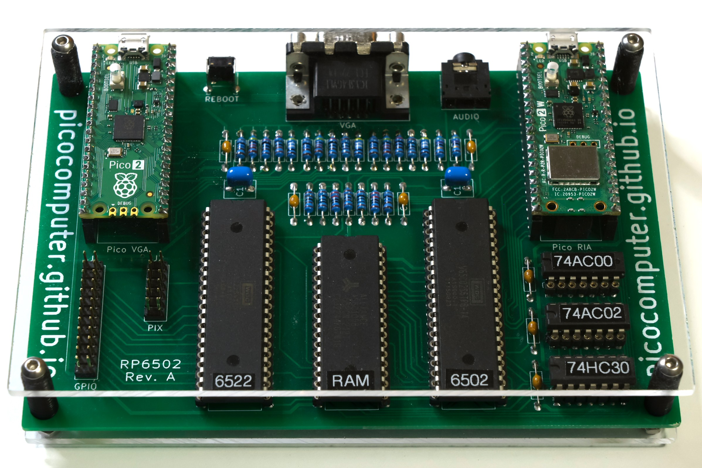

Picocomputer¶
The Picocomputer 6502 is a tribute to the processor that launched a computing revolution. The lack of apparent complexity is a by product of the design philosophy: Keep the essence of programming a 6502 and 6522 then rethink everything else.
{kind=link}
Key Features¶
64KB System RAM
64KB Extended RAM
VGA and HD Output
8-Channel Stereo Sound Generator
Protected Operating System
USB for Keyboard, Mouse, and Gamepads
Bluetooth LE for Keyboard, Mouse, and Gamepads
WiFi modem emulation
Real Time Clock with DST and NTP
Resources¶
For support and community interaction, use the following channels:
GitHub: https://github.com/picocomputer
Forums: https://github.com/picocomputer/community/discussions
Discord: https://discord.gg/TC6X8kTr6d
The entire development process was documented in a series of YouTube videos. The broad strokes are all still in place but remember that these video were made during development.
How To Obtain¶
The Picocomputer 6502 is a single board computer you build yourself. It has been built by hundreds of people. You can also have a single unit manufactured especially for you in China. The whole process is documented and well tested.
Hardware: Schematic and manufacturing information.
Datasheets¶
The Picocomputer 6502 is a reference design for RP6502 modular hardware. The only required module is a RP6502-RIA.
RP6502-RIA: Interface adapter for the 6502, akin to CIA, VIA, and ACIA devices.
RP6502-RIA-W: Wireless features available when using the recommended “Pico 2 W”.
RP6502-VGA: Optional video adapter that connects to the RP6502-RIA.
RP6502-OS: The operating system and application programming interface.